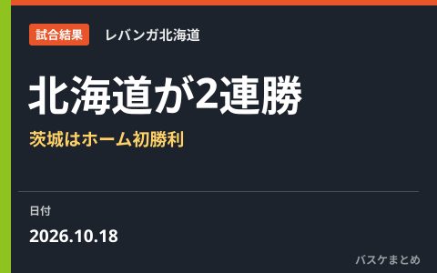

北海道は富永啓生35得点で2連勝、茨城はホーム初勝利 Bプレミア10月18日は4試合すべて大差で決着

10月18日に行われたりそなB.LEAGUE PREMIER4試合の結果が出ました。北海道は富永啓生の35得点を軸に横浜BCを109-78で下して2連勝、開幕から7連敗を喫していた茨城ロボッツは大阪エヴェッサに98-63で勝利し、待望のホーム初勝利を飾りました。京都ハンナリーズはアンジェロ・カロイアロの29得点で佐賀バルーナーズに115-70の大勝、シーホース三河はアーロン・ホワイトの21得点・14リバウンド・6アシストを軸に富山グラウジーズを99-56で退け、この日はB.PREMIER全4試合が大差での決着となりました。
北海道、富永啓生35得点で横浜BCに109-78 連勝を2に
横浜ビー・コルセアーズのホームで行われたこの試合、北海道は富永啓生が3本の3ポイントシュートを含む35得点を記録し、109-78で快勝しました。北海道は16日の佐賀戦も109-90で制して連敗を止めたばかりで、この試合を含め連勝を2に伸ばしています。横浜BCは今季5勝4敗となりました。
茨城、開幕7連敗からの反撃 大阪に98-63でホーム初勝利
開幕から7連敗と苦しいスタートになった茨城ロボッツは、16日の川崎戦を82-74で制して今季初勝利を挙げたのに続き、18日はホームに大阪エヴェッサを迎えて98-63で快勝。今季2勝目にしてホームでの初勝利を手にしました。大阪は今季1勝6敗と苦しいシーズンが続いています。
京都はカロイアロ29得点で佐賀に45点差、三河はホワイトの40貢献度で富山に43点差
京都ハンナリーズは佐賀バルーナーズを115-70で大きく突き放しました。アンジェロ・カロイアロが29得点、チャールズ・ジャクソンが21得点と外国籍の2人が得点を量産し、第4クォーターも相手に得点を与えない展開で45点差の大勝となりました。一方、富山のホームで行われたシーホース三河との対戦は、三河のアーロン・ホワイトが21得点・14リバウンド・6アシストで貢献度（EFF）40をマークし、ダバンテ・ガードナーの18得点も加わって99-56で富山を退けています。
| 対戦（10月18日） | スコア |
|---|---|
| 京都ハンナリーズ vs 佐賀バルーナーズ | 115-70（京都ハンナリーズ勝利） |
| 富山グラウジーズ vs シーホース三河 | 56-99（シーホース三河勝利） |
| 茨城ロボッツ vs 大阪エヴェッサ | 98-63（茨城ロボッツ勝利） |
| 横浜ビー・コルセアーズ vs 北海道 | 78-109（北海道勝利） |
開幕から1カ月、下位クラブにも動きが
B.PREMIERは9月22日の開幕から1カ月近くが経過し、上位クラブの力が安定する一方、茨城のように開幕から連敗が続いていたクラブが波に乗り始める動きも出てきました。今季初勝利からホーム初勝利へとつなげた茨城にとっては、シーズン中盤以降の反撃に向けた大きな一歩になりそうです。北海道も連敗を止めた直後の連勝で、東地区の順位争いに食い込む形となっています。各クラブの順位や今後の日程は順位・日程カテゴリでも随時取り上げていきます。
Q. 貢献度（EFF）とは？
A. 得点・リバウンド・アシスト・スティール・ブロック・被ファウルを加算し、外したシュート・ターンオーバー・被ブロック・ファウルを減算したB.LEAGUE公式の指標です。この日はアーロン・ホワイト（三河）の40が最高値でした。
出典：バスケットボールキング「Bプレミア東地区結果まとめ」／Bリーグ（DAZN News）「Bプレミア結果まとめ」／B.LEAGUE公式 試合日程・結果ページおよび試合詳細（ボックススコア）
https://news.yahoo.co.jp/articles/1ad39a52a9b7b90aee3305516dc89138b2d52f81（北海道・茨城）
https://news.yahoo.co.jp/articles/0b05e86e1608e7210163ee3eed227933d3f9805c（京都・三河・茨城・北海道）
https://www.bleague.jp/schedule/?tab=1&year=2026&mon=10&day=18
https://www.bleague.jp/game_detail/?ScheduleKey=506475（富山 vs 三河）